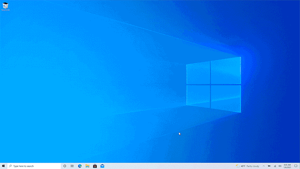
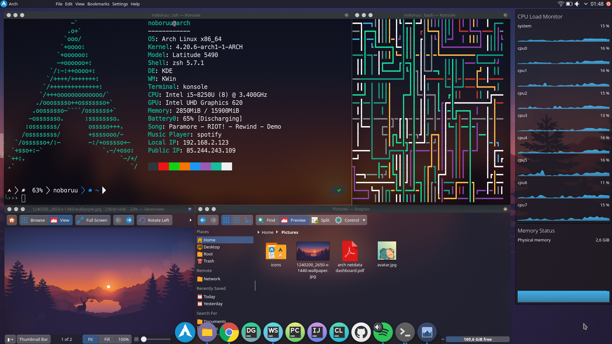
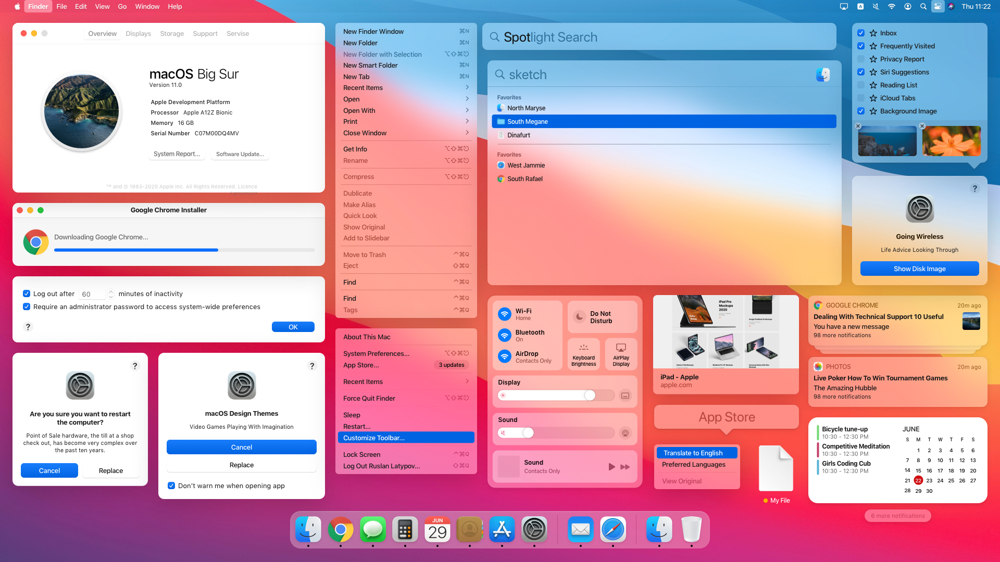

Microsoft Windows – rodzina systemów operacyjnych stworzonych przez firmę Microsoft. Systemy rodziny Windows
działają na serwerach, systemach wbudowanych oraz na komputerach osobistych, z którymi są najczęściej
kojarzone.Prezentację pierwszego graficznego środowiska pracy z rodziny Windows firmy Microsoft
przeprowadzono w listopadzie 1984. Wówczas była to graficzna nakładka na system operacyjny MS-DOSa,
powstała w odpowiedzi na rosnącą popularność graficznych interfejsów użytkownika, takich jakie
prezentowały na przykład komputery Macintosh. Nakładka, a później system operacyjny Windows po pewnym
czasie zdominowała światowy rynek komputerów osobistych. Pierwszym stabilnym wydaniem był Windows 1.01.
Windows 1.00 był wersją beta, nigdy nie wydaną.

Linux
Linux – rodzina uniksopodobnych systemów operacyjnych opartych na jądrze Linux. Linux jest jednym z
przykładów wolnego i otwartego oprogramowania (FLOSS): jego kod źródłowy może być dowolnie
wykorzystywany, modyfikowany i rozpowszechniany. Od kwietnia 2017 roku Android (a tym samym Linux)
oficjalnie jest najpopularniejszym systemem operacyjnym na świecie.
Pierwsza wersja jądra Linux została udostępniona publicznie 17 września 1991 dla architektury komputera
PC, wykorzystującego mikroprocesor o architekturze IA-32. Do jądra dołączono narzędzia systemowe zwane
też „Development Kit” oraz biblioteki z projektu GNU, aby otrzymać nadający się do użytku system
operacyjny. Z tego powodu powstała też alternatywna nazwa kompletnego systemu: GNU/Linux. Obecnie jest
on udostępniany w formie licznych dystrybucji Linuksa, które składają się z jądra (niekiedy
zmodyfikowanego w stosunku do oficjalnej wersji) i zestawu pakietów oprogramowania dobranego do
różnorodnych wymagań. Dystrybucje zawierają głównie oprogramowanie na licencjach FLOSS, jednak
najczęściej zawierają też lub pozwalają na łatwe doinstalowanie pewnej liczby programów na licencjach
własnościowych.
Jednym z zastosowań Linuksa są środowiska serwerowe, dla których komercyjne wsparcie oferują również
duże firmy komputerowe jak IBM, Oracle, Dell, Microsoft, Hewlett-Packard, Red Hat i Novell. Linux działa
na szerokiej gamie sprzętu komputerowego, wliczając komputery biurkowe, superkomputery i systemy
wbudowane, takie jak telefony komórkowe, routery oraz telewizory (np. LG, Samsung).

macOS Big Sur
macOS – rodzina uniksowych systemów operacyjnych produkowanych i rozprowadzanych przez Apple Inc.
Dostępny oficjalnie jedynie dla komputerów Macintosh, instalowany fabrycznie w nich od 2002 roku. 13
czerwca 2016 roku na WWDC została ogłoszona zmiana nazwy na macOS w związku z potrzebą unifikacji nazw
używanych przez Apple dla swoich systemów operacyjnych.
macOS oryginalnie działał jedynie na Macach o architekturze PowerPC. W 2006 wydano pierwszą wersję dla
nowych Maców o architekturze x86 – Mac OS X 10.4. W 2005 roku wydano pierwszą wersję w pełni zgodną z
Single UNIX Specification w wersji trzeciej – Mac OS X 10.5, działający zarówno na Macach PowerPC i x86
z pomocą technologii zwanej Universal binary, czyli formatu plików wykonywalnych działających na obu
architekturach. 10.6 Snow Leopard to ostatnia wersja, która obsługuje programy dla procesorów PowerPC
przy użyciu narzędzia Rosetta. Mac OS X 10.7 przestaje również obsługiwać komputery o architekturze
32-bitowej, ograniczając się do procesorów 64-bitowych.

Michał Konwiak Kierunek: Inżynieria Danych I grupa